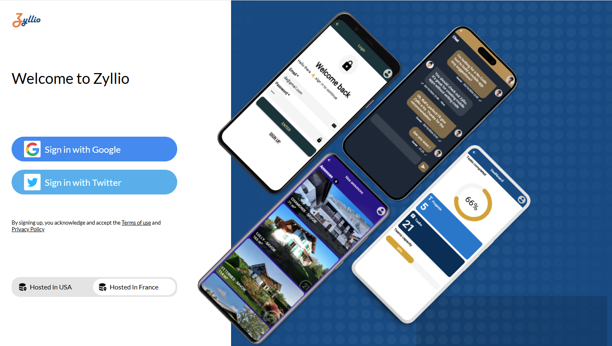
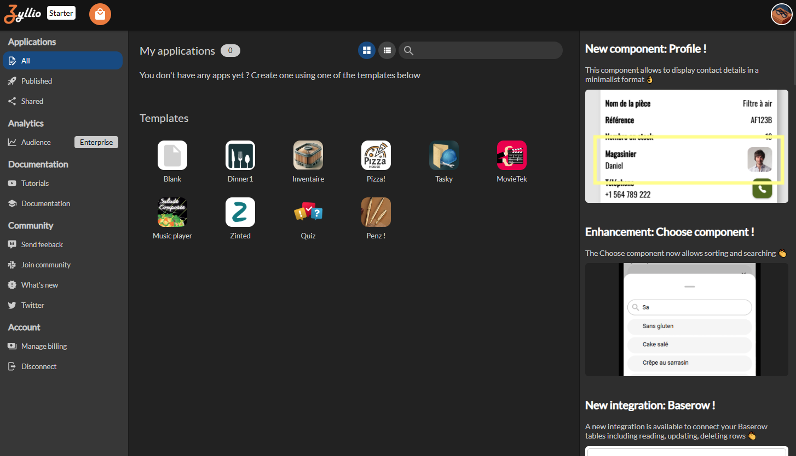
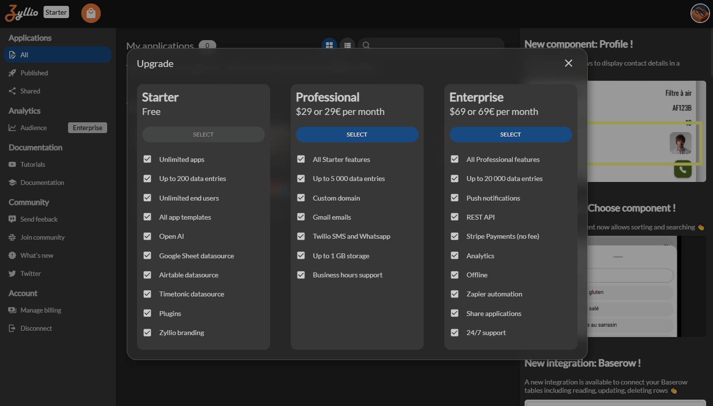
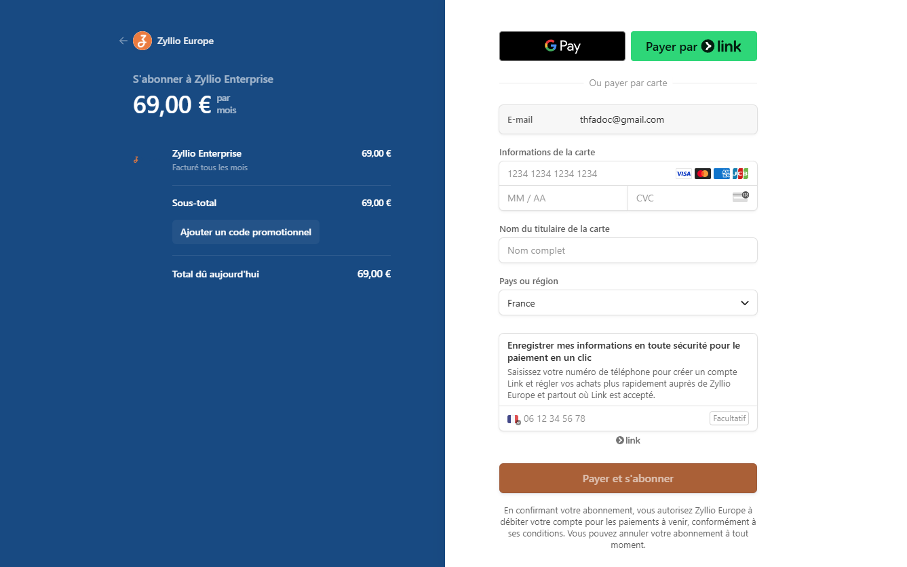
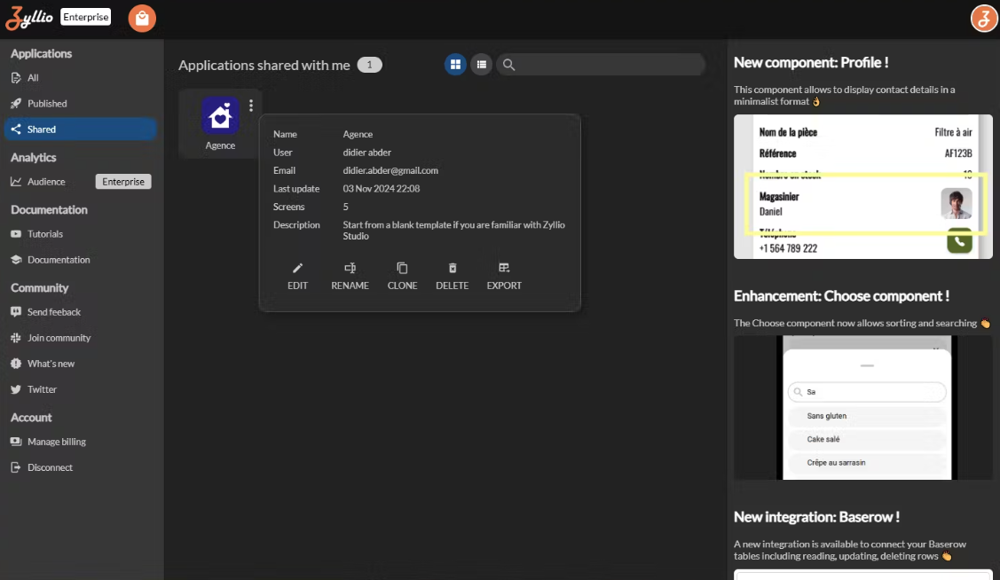

Transf�rer une application
Cette page pr�sente les diff�rentes �tapes � suivre pour transf�rer une application. Vous y trouverez des informations pratiques et des conseils afin de faciliter la passation, assurer la continuit� du projet et garantir la satisfaction de l�ensemble des parties prenantes.
Acc�der au Studio Zyllio
Acc�dez au Studio Zyllio Fran�ais via ce lien : https://www.zyllio.one

Connectez vous � l�aide de votre compte Google pour afficher le tableau de bord Zyllio ci-dessous

Souscrire l�abonnement Entreprise
Cliquez sur le bouton situ� en haut � gauche
S�lectionnez l�abonnement Enterprise

Proc�dez au paiement, la navigation revient automatiquement sur votre tableau de bord Zyllio avec votre abonnement imm�diatement activ�
Transf�rer une application
Acc�dez � vos applications partag�es depuis le menu Shared comme suit:

Cliquez sur le menu de l�application puis Clone

F�licitations, votre application est maintenant disponible dans votre compte, revenez dans le menu All pour acc�der � vos applications

Lorsque vous clonez votre application, vous obtenez une copie ind�pendante qui vous appartient exclusivement et qui n�est accessible � aucun autre utilisateur, sauf si vous choisissez de la partager
Support
N�h�sitez pas � nous contacter